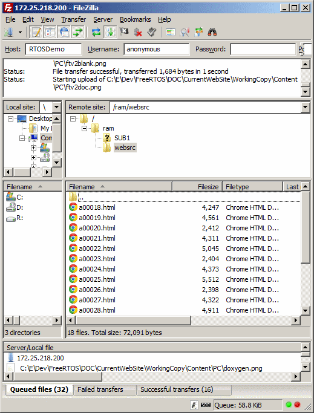

|
|||||||
|

FTP'ing web content into /ram/websrc FreeRTOS+TCP Web ServerThis is the default page being served by the FreeRTOS+TCP web server, with files served from a disk implemented using FreeRTOS+FAT.The HTTP root directory is set by the configHTTP_ROOT constant in FreeRTOSConfig.h. These default web pages can be replaced with new web content by FTP'ing files into that directory. NOTE: Performance will be limited when using the FreeRTOS Windows port. |